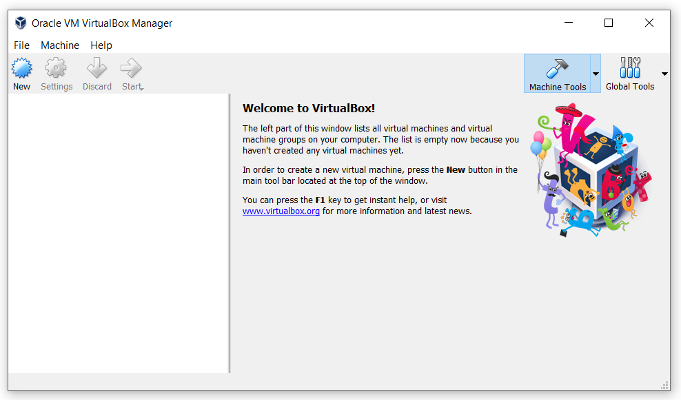
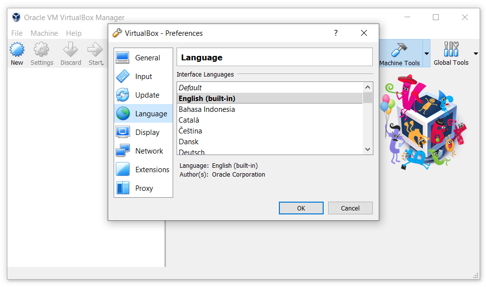
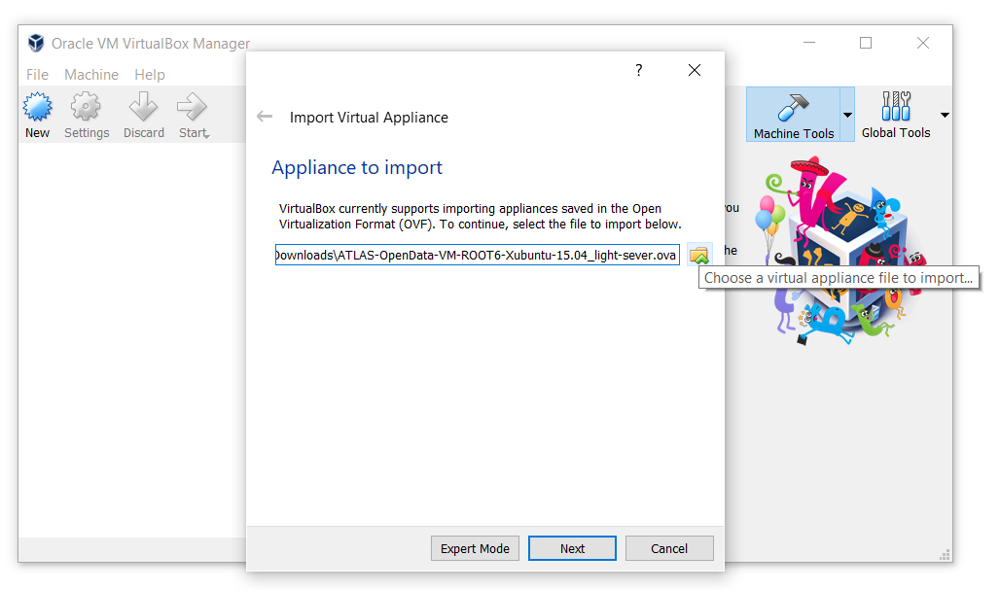
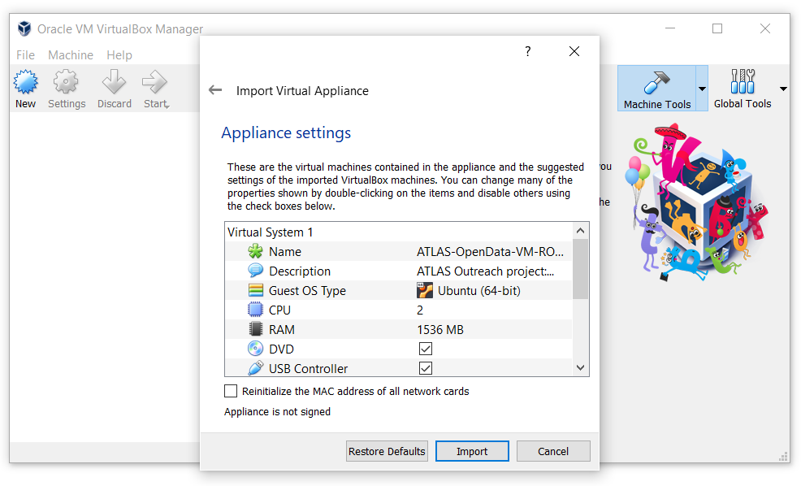
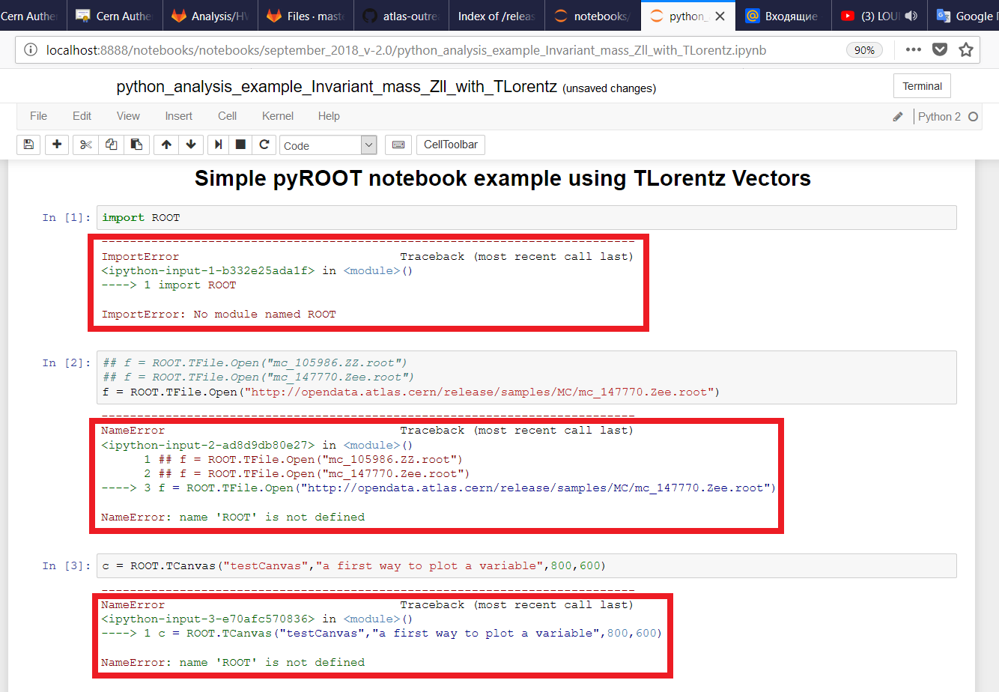
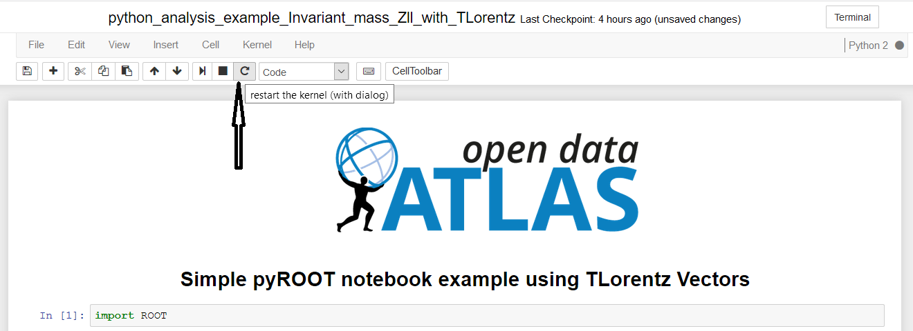

About
This is an analysis code that may be used to analyse the data of the ATLAS published dataset.
- Why do you need a virtual machine?
Virtualization allows you to create an operating system in the operating system and test programs without installing them on the host machine. Also virtualization allows you to do penetration testing.
There are a generous amount of Virtual Machines (VM): ORACLE VirtualBox, Windows Visual, VMware Workstation, Colinux, AlphaVM-Pro, DOSBox, Linux-VServer, PearPC, VirtualLogix VLX etc. (read more about VM on wikipedia). Among these VM, Oracle VirtualBox is one of the best. VirtualBox is a virtualization software product for Microsoft Windows, Linux, FreeBSD, Mac OS X, Solaris / OpenSolaris, ReactOS, DOS and others.
Collaboration Software Products - Top To Look For:
— USB support - VirtualBox implements a virtual USB controller and supports connecting devices to a virtual machine via USB.
— Built-in RDP server, as well as support for USB client devices over RDP — the user can connect to the virtual machine remotely using an RDP-compatible client.
— iSCSI initiator - VirtualBox contains an integral iSCSI initiator that makes it possible to use an iSCSI worker as a virtual disk without the need to support the iSCSI guest system.
— Support for various types of network interaction (NAT, Host Networking via Bridged, Internal).
— Support for Shared Folders, allowing you to share files between the host and guest systems.
— and finally VirtualBox is a free to use.
Also with VirtualBox, you can use Windows, Linux, Mac OS X, Solaris to run their bundles on one computer. Each virtual machine is called a guest, and your main computer (the OS installed on it) is called a host. The point is that you can run several guest systems in the host’s operating system (direct inside it).
VM with ROOT and Jupyter
- VirtualBox installation
Follow the instructions below to install the VM on your computer:
- What version to download? Assumption of what your operating system. In this review we will explain how to install VirtualBox on Windows 10. Installing VirtualBox on all versions of Windows is identical. First download the installation file.
— Download VirtualBox you can free on the official website.
— So, after you have downloaded the latest version of Virtual Box, let's proceed to the installation. Find the downloaded file in your computer (usually the downloaded file is in С:\Users\User\Downloads\"filename"), run the program and click "Next".
— After that, the component selection window will appear. Without changing anything, click "Next".

— In the next window, without any changing click "Next"

— Now a window will appear that says that the Internet will be temporarily disabled during the installation of the program. Click "Yes".

— And click "Install" to begin the installation.

— After the installation process is complete, click "Finish"

— Now you will see a clean window of your virtual machine without any operating systems:

- Configure VirtualBox
— If you have English installed on your system, the program will automatically change the interface language to English when you first start it. If this does not happen, go to the menu “File” -> “Settings\or/Preferences” and on the Languages tab select your language.

In principle, in the settings of VirtualBox there is nothing more to change.
- How to install an operating system in your virtual machine?
First, download the ready operating system (.ova file with ROOT and Jupiter inside) from this link !
If you want to install your operating system from scratch, then see how to do it in this section.
— After you have downloaded the ready file, start the VirtualBox. Go to the menu "File" -> “Import Appliance...” (or perform the same function with the combination of buttons: "Ctrl" + "I").

— In the window that appears, select the downloaded ".ova" file from the Downloads folder and click "Next":

— After click "Import" without any changes:

— The operating system is importing:

— Now your Virtual Machine with Linux operating system is ready to work, start it by clicking  and use:
and use:

- Jupiter terminal start and Notebooks run errors in VM
After starting your VM and running Notebooks, you may encounter the following error (look at the red frames in the photo below):

To solve this error, follow these simple steps:
— Сlose notebooks and terminal
— Run terminal again and type this code ./run-server-jupyter.sh to start Jupiter
— You have restarted your terminal and server successfully

— Open notebook in your browser and restart kernel by clicking restart button

Now your terminal and server should work. Notebook also runs without errors.